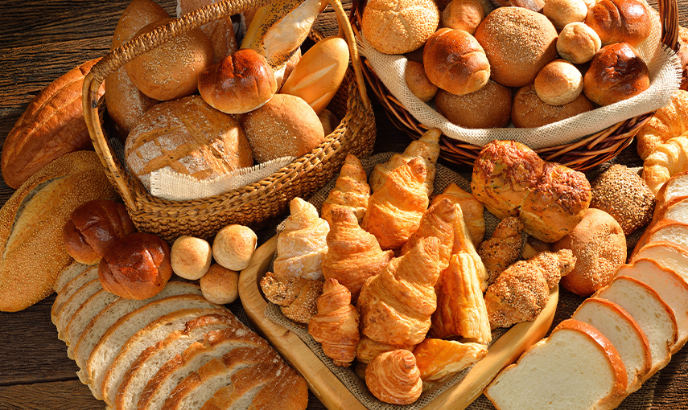
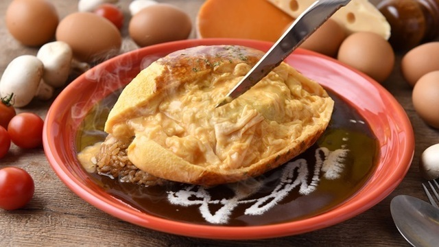
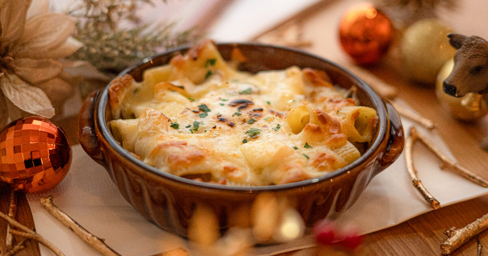
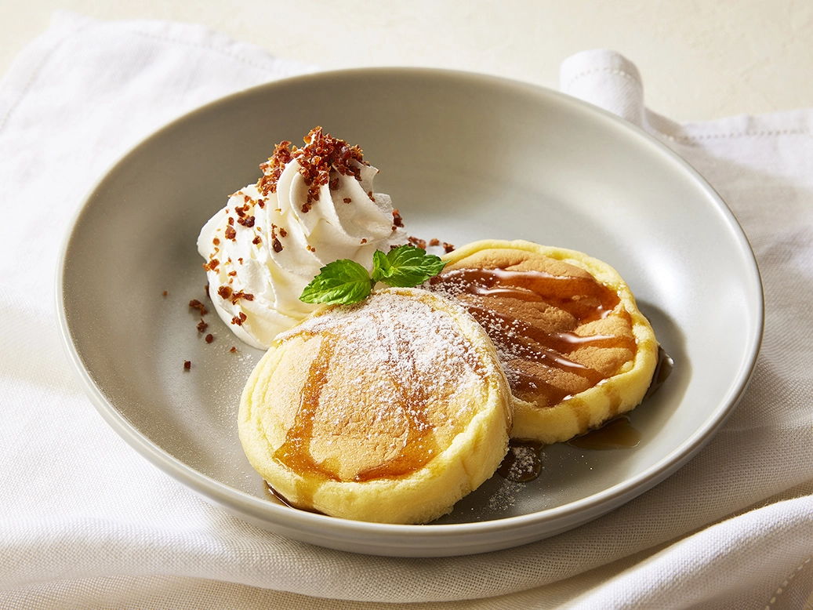
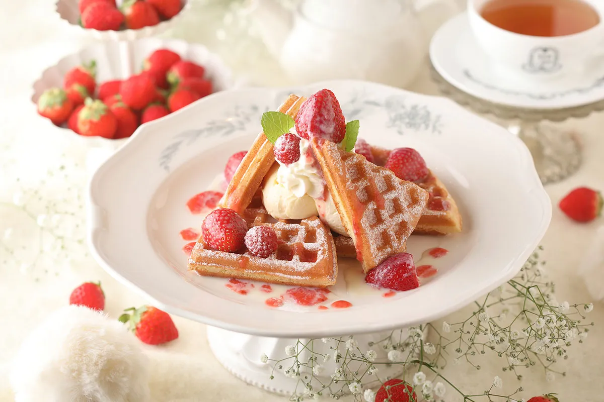
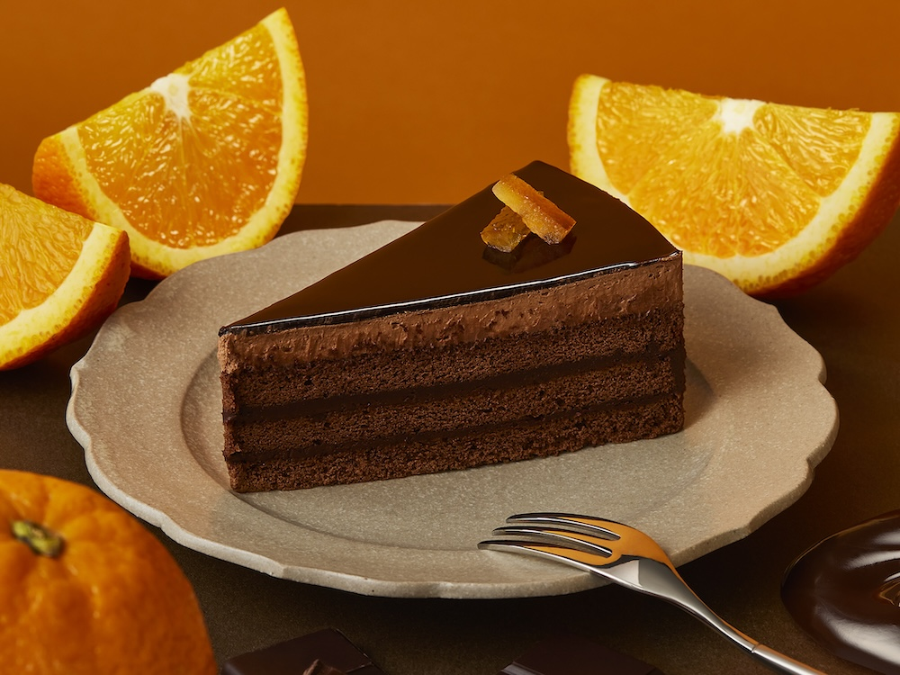
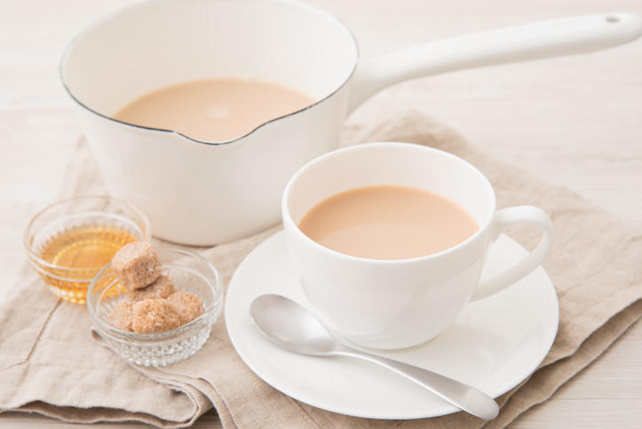
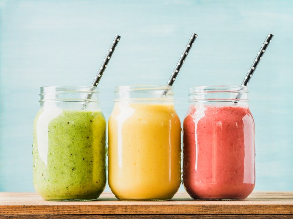

ランチ
日替わり焼き立てパン
毎日店内で焼き上げる、香り高い焼きたてのパン。サクサクした食感やふわっとした中身が特徴です。お好きなドリンクと合わせて、焼きたてのパンで心温まるひとときをお楽しみください。
濃厚ビーフシチューのふわとろオムライス
じっくり煮込んだ濃厚なビーフシチューに、ふわふわのオムライスが乗った贅沢な一皿。とろけるチーズとまろやかなソースが絡み合い、食べるたびに深い味わいが広がります。ボリューム満点で、満足感たっぷりです。
とろ～りチーズのペンネグラタン
濃厚なホワイトソースととろけたチーズが絡み合う、ペンネのグラタン。焼きたてのチーズが香ばしく、クリーミーな味わいが広がります。熱々をお召し上がりください。
デザート
ふわふわスフレパンケーキ
口に入れるとふわっととろける、まるで雲のようなパンケーキ。軽やかで柔らかな食感を楽しんでいただける一品です。メープルシロップと生クリームを添えて、贅沢なひとときをお届けします。
ストロベリーワッフル
サクサクのワッフルに甘酸っぱい新鮮な苺をたっぷりトッピング。ホイップクリームとともに、甘さと酸味が絶妙にマッチするデザートです。苺の季節にぴったり！
オレンジショコラケーキ
ほんのりビターなチョコレートケーキに、爽やかなオレンジの風味をプラス。フルーティーでありながら濃厚な味わいが絶妙に絡み、食べるたびに新しい発見があります。
ドリンク
本日のブレンドコーヒー
本日おすすめのコーヒーを一杯ずつ丁寧に淹れています。産地や焙煎方法にこだわり、その日の気候や旬の豆を楽しんでいただけるようにご提案します。豊かな香りと深い味わいをお楽しみください。
贅沢ロイヤルミルクティー
上質な紅茶を濃厚なミルクで贅沢に煮出した、まろやかでリッチな味わいのミルクティー。温かく、心地よいひとときを提供する一杯です。
旬のフルーツスムージー
季節ごとのフレッシュなフルーツをたっぷり使ったスムージー。果物本来の甘さと栄養をそのままお届けします。健康志向の方にもぴったりな爽やかで飲みやすい一品です。
